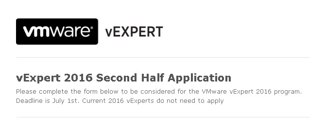

Estão abertas as inscrições para o vExpert 2016
VMwareCompartilhe esse post nas redes sociais...
Olá Homelabers!
As inscrições para o programa vExpert 2016 (segunda metade de 2016) já estão abertas.
Eu já falei bastante aqui sobre o programa vExpert e gostaria de reforçar a importância do programa para quem trabalha com VMware.
A comunidade VMware é bastante forte e ativa fora do Brasil e eu acredito que temos potencial de sobra para fazer algo parecido aqui no BR.

Somos apenas 7 vExperts no Brasil em 2016 e esse número, na minha opinião é MUITO pequeno. Conheço CENTENAS de profissionais FODA em VMware por ai, mas infelizmente ninguém se interessa em criar e compartilhar conteúdo.
Se você tem interesse em aplicar para o vExpert, pode contar comigo. Posso dar várias dicas. E só digo uma coisa: O esforço compensa!
Para aplicar, clique neste link e preencha o formulário (em Inglês). As inscrições vão até 01/07 e o resultado será publicado no dia 19/08.
Existem 3 caminhos para aplicar:
Evangelist Inclui autores de livros, blogueiros, construtores de ferramentas, palestrantes, colaboradores VMTN e outros profissionais de TI que compartilham seu conhecimento e paixão com os outros. Funcionários da VMware também pode aplicar através do caminho Evangelista. Uma referência de um funcionário da VMware é recomendado se as suas atividades não são públicas ou estavam em um idioma diferente do Inglês.
Aqui é o seguinte: Se você é um blogueiro esse é o caminho a seguir. Conhecer alguém dentro da VMware ajuda, mas não é impossível se você não conhecer ninguém. Um dica: Escreva um argumento bem bacana e capriche no conteúdo do seu blog. Procure pela galera da VMware no Linkedin, Twitter, etc. Se apresente, mostre o blog e não tenha vergonha de pedir opinião e uma recomendação. Conheça outros vExperts (aqui tem a lista de todos) e faça a mesma coisa. Mas atenção, antes de pedir para alguém te recomendar, faça um auto-critica e veja se o seu conteúdo realmente é bom e principalmente consistente. Mas não desanime. Aplique!
Customer O Caminho do cliente é para os líderes de organizações de clientes da VMware. Eles foram campeões internas em suas organizações, ou trabalhou com a VMware para criar histórias de sucesso, agir como referências de clientes, dado entrevistas públicas, palestras em conferências, ou são líderes VMUG (impossível aqui no BR, mas isso é papo para outro post). Uma referência de um funcionário da VMware é recomendado se as suas atividades não são públicas.
Aqui eu não consigo falar muito, porque não me apliquei por esse caminho, mesmo sendo um client VMware e tento trabalhado diretamente com eles no meu projeto. Mas é um outro caminho a ser seguido, se você é um cliente e tem contatos na VMware. Eu vou perguntar no grupo dos vExperts e atualizo aqui depois.
**VPN (VMware Partner Network) ** O Caminho VPN é para funcionários de nossas empresas parceiras que lideram com paixão e pelo exemplo, que estão comprometidos com a aprendizagem contínua através de certificações para tornar seu conhecimento técnico e experiência disponíveis para muitos. Isto pode acontecer na forma de participação de eventos, vídeos e palestras públicas. É necessária uma referência funcionário da VMware para se candidatar no caminho VPN
Sobre esse caminho é o que eu tenho menos experiência para falar alguma coisa. Se você é um parceiro VMware, minha sugestão é entrar em contato com o seu Business Partner da VMware e procurar mais informações.
Mais informações aqui (em Inglês).
Se você tiver alguma dúvida sobre o programa ou como aplicar, pode me procurar deixando uma mensagem aqui no blog, no facebook, no twitter, enviando um e-mail, etc.
Você ainda pode falar com o twitter do vExpert (@vExpert) ou envie um e-mail para o Corey Romero (o cara da VMware responsável pelo programa) vexpert@vmware.com
Até a próxima!
VC
Compartilhe esse post nas redes sociais...Valdecir Carvalho
Nerd e pai orgulhoso da Mariana e João. Profissional Sênior de TI com foco em arquitetura de infraestrutura e cloud computing. Blogueiro, podcaster, palestrante, amante de comunidades técnicas, fotógrafo aposentado e adora jogos antigos.
#vExpert · #VMUGLeader · #VUGBrasil · #vBronwBagBrasil · #VeeamVanguard